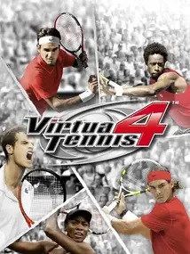

 |
|
| Tiempo de juego | 2m 10s |
| Última actividad | 13/11/2025 17:02:54 |
| Añadido | 22/9/2025 14:16:41 |
| Modificado | 3/12/2025 11:56:00 |
| Estado de finalización | Jugado |
| Librería | Playnite |
| Fuente | |
| Plataforma | PC (Windows) |
| Fecha de lanzamiento | 29/4/2011 |
| Puntuación de la Comunidad | 86 |
| Puntuación de la Crítica | 68 |
| Puntuación de usuario | |
| Género | Simulator Sport |
| Desarrollador | Sega AM3 |
| Editor | Sega |
| Característica | Co-Operative Multiplayer Single Player Split Screen |
| Enlaces | Steam |
| Tag | Voz y Texto en Español |
Hay simuladores de tenis, y después está Virtua Tennis. Esta saga no nació para que te preocupes por el grip de la raqueta; nació en los fichines de SEGA con una sola misión: ser el juego de tenis más divertido, rápido y adictivo del planeta. Y "Virtua Tennis 4" es el último gran heredero de esa filosofía arcade.
La fórmula es la perfección de la simpleza: un botón para el slice, otro para el top spin, otro para el globo. Eso es todo lo que necesitás saber para empezar a jugar. Es un juego que podés agarrar por primera vez y en dos minutos ya estás metido en un peloteo espectacular. Es pura intuición y reflejos, no un manual de 50 páginas.
Pero que no te engañe su simpleza. La profundidad está en el timing y el posicionamiento. Y en esta entrega, le metieron una mecánica genial: la barra de "Match Momentum". A medida que jugás con tu estilo (defensivo, agresivo, etc.), la barra se llena, y cuando está a tope, podés desatar un "Super Shot", un bombazo cinematográfico que es casi imposible de devolver. Le da un toque de juego de pelea que es una locura.
El modo carrera es un delirio. En vez de un calendario aburrido, es una especie de juego de mesa donde te movés por un mapa del mundo eligiendo tu camino, entrenando y compitiendo. Tiene una personalidad única.
Es, posiblemente, el último gran exponente del tenis arcade. Una explosión de color y diversión que te recuerda a la época dorada de la Dreamcast. Si buscás un simulador denso, pasá de largo. Si querés acción inmediata, peloteos espectaculares y la satisfacción pura de meter un winner en la línea, este es tu juego.